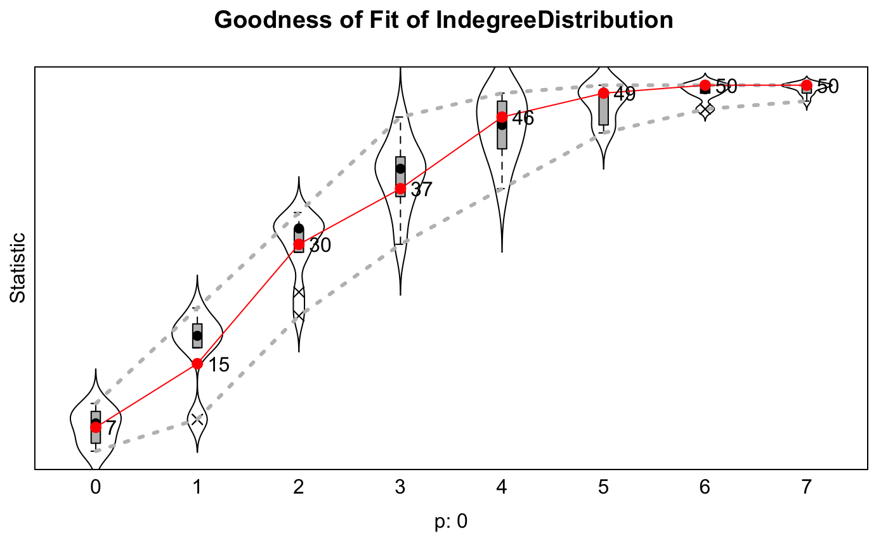
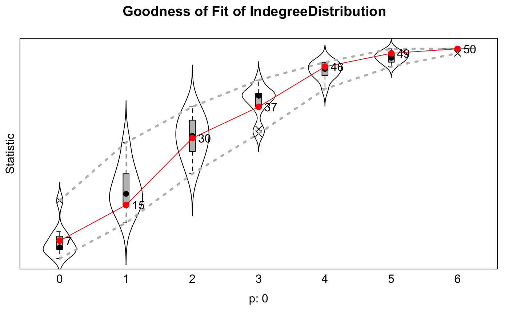

sienaGOF.RdThe function sienaGOF assesses goodness of fit
for a model specification as represented by an estimated
sienaFit object created by siena07.
This is done by simulations of auxiliary
statistics, that differ from the statistics used for estimating
the parameters. The auxiliary statistics must be given explicitly.
The fit is good if the average values
of the auxiliary statistics over many simulation runs are close
to the values observed in the data.
A Monte Carlo test based on the Mahalanobis
distance is used to calculate frequentist \(p\)-values.
Plotting functions can be used to diagnose bad fit. There are basic
functions for calculating auxiliary statistics available out of the
box, and the user is also permitted to create custom functions.
sienaGOF(sienaFitObject, auxiliaryFunction, period=NULL, verbose=FALSE, join=TRUE, twoTailed=FALSE, cluster=NULL, robust=FALSE, groupName="Data1", varName, ...) # S3 method for sienaGOF plot(x, center=FALSE, scale=FALSE, violin=TRUE, key=NULL, perc=.05, period=1, fontsize=12, ...) descriptives.sienaGOF(x, center=FALSE, scale=FALSE, perc=.05, key=NULL, period=1, showAll=FALSE)
| sienaFitObject | Results of class |
|---|---|
| auxiliaryFunction | Function to be used to calculate
the auxiliary statistics;
this can be a user-defined function, e.g. depending on the See |
| period | Vector of period(s) to be used (may run from 1 to
number of waves - 1). Has an effect only if |
| verbose | Whether to print intermediate results. This may give some peace of mind to the user because calculations can take some time. |
| join | Boolean: should sienaGOF do tests on all of the periods
individually ( |
| twoTailed | Whether to use two tails for calculating \(p\)-values on the Monte Carlo test. Recommended for advanced users only, as it is probably only applicable in rare cases. |
| cluster | Optionally, a |
| robust | Whether to use robust estimation of the covariance matrix. |
| groupName | Name of group; relevant for multi-group data sets. |
| varName | Name of dependent variable. |
| x | Result from a call to sienaGOF. |
| center | Whether to center the statistics by median during plotting. |
| scale | Whether to scale the statistics by range during plotting. scale=TRUE makes little sense without also center=TRUE. |
| violin | Use violin plots (vs. box plots only)? |
| key | Keys in the plot for the levels of the auxiliary statistic
(as given by parameter |
| perc | 1 minus confidence level for the confidence bands (two sided). |
| fontsize | Font size for the observed values plotted. |
| ... | Other arguments; for |
| showAll | If FALSE, drops statistics with variance 0, like in the plot. |
This function is used to assess the goodness of fit of an estimated stochastic actor-oriented model for an arbitrarily defined multidimensional auxiliary statistic. It operates basically by comparing the observed values, at the ends of the periods, with the simulated values for the ends of the periods. The differences are assessed by combining the components of the auxiliary statistic using the Mahalanobis distance.
The function does not work properly for data sets that include a
sienaCompositionChange object. If you wish to test the
fit for such a data set, you need (for the purpose of fit assessment only)
to replace the data set by a data set where absent actors are represented
by structural zeros, and estimate the same model for this data set with the
corresponding effects object, and use sienaGOF for this
sienaFit object.
To achieve comparability between simulated and observed dependent variables,
variables that are missing in the data at the start or end of a period
are replaced by 0 (for tie variables) or NA (for behavior variables).
If there are any differences between structural values at the beginning and
at the end of a period, these are dealt with as follows.
For tie variables that have a structural value at the start of the period,
this value is used to replace the observed value at the end of the period
(for the goodness of fit assessment only).
For tie variables that have a structural value at the end of the period but a
free value value at the start of the period, the reference value for the
simulated values is lacking; therefore, the simulated values at the end of
the period then are replaced by the structural value at the end of the period
(again, for the goodness of fit assessment only).
The auxiliary statistics documented in sienaGOF-auxiliary
are calculated for the simulated dependent
variables in Phase 3 of the estimation algorithm,
returned in sienaFitObject because of having used
returnDeps = TRUE in the call to siena07.
These statistics should be chosen to represent features of the network
that are not explicitly fit by the estimation procedure but can be
considered important properties that the model at hand should represent well.
Some examples are:
Outdegree distribution
Indegree distribution
Distribution of the dependent behavior variable (if any).
Distribution of geodesic distances
Triad census
Edgewise homophily counts
Edgewise shared partner counts
Statistics depending on the combination of network and behavioral variables.
The function is written so that the user can easily define other functions to
capture some other relevant aspects of the network, behaviors, etc.
This is further illustrated in the help page
sienaGOF-auxiliary.
We recommend the following heuristic approach to model checking:
Check convergence of the estimation.
Assess goodness of fit (primarily using join=TRUE) on
auxiliary statistics, and if necessary refine the model.
Assess time heterogeneity by sienaTimeTest
and if there is evidence for time heterogeneity
either modify the base effects or include time dummy terms.
No general rules can be given about whether time heterogeneity
(sienaTimeTest) or goodness of fit using sienaGOF
have precedence. This is an explorative issue.
The summary function will display some useful information
to help with model selection if some effects are set to FIX and
TEST on the effects object. A rough estimator for the Mahalanobis
distance that would be obtained at each proposed specification
is given in the output. This can help guide model selection.
This estimator is called the modified Mahalanobis distance (MMD).
See Lospinoso (2012), the manual, or the references for more information.
The following functions are pre-fabricated for ease of use, and can
be passed in as the
auxiliaryFunction with no extra effort;
see sienaGOF-auxiliary and the examples below.
sienaGOF returns a result of class sienaGOF;
this is a list of elements of class sienaGofTest;
if join=TRUE, the list has length 1; if join=FALSE,
each list element corresponds to a period analyzed;
the list elements are themselves lists again, including the
following elements:
The name of sienaFitObject.
The name of auxiliaryFunction.
The observed values for the auxiliary statistics.
The simulated auxiliary statistics.
The observed Mahalanobis distance in the data.
The Mahalanobis distance for the simulations.
Whether the \(p\)-value corresponds to a one- or two-tailed Monte Carlo test.
The \(p\)-value for the observed Mahalanobis distance in the permutation distribution of the simulated Mahalanobis distances.
Rank of the covariance matrix of the simulated auxiliary statistics.
See http://www.stats.ox.ac.uk/~snijders/siena/ for general information on RSiena.
Lospinoso, J.A. and Snijders, T.A.B. (2019). Goodness of fit for stochastic actor-orientedmodels. Methodological Innovations, 12:2059799119884282.
mynet <- sienaDependent(array(c(s501, s502), dim=c(50, 50, 2))) mybeh <- sienaDependent(s50a[,1:2], type="behavior") mydata <- sienaDataCreate(mynet, mybeh) myeff <- getEffects(mydata) myeff <- includeEffects(myeff, transTrip)#> effectName include fix test initialValue parm #> 1 transitive triplets TRUE FALSE FALSE 0 0#> effectName include fix test initialValue parm #> 1 3-cycles TRUE TRUE TRUE 0 0#> effectName include fix test initialValue parm #> 1 transitive ties TRUE TRUE TRUE 0 0#> If you use this algorithm object, siena07 will create an output file /var/folders/pl/ngry9kn13p7466xwk0_2xyh40000gn/T//RtmpB3MQ6s/Siena2a715dd2f15b.txt . #> This is a temporary file for this R session.# Shorter phases 2 and 3, just for example. ans <- siena07(myalgorithm, data=mydata, effects=myeff, batch=TRUE, returnDeps=TRUE)#> #> Start phase 0 #> theta: 4.696 -1.489 0.000 0.000 0.000 0.000 0.706 0.322 0.000 #> #> Start phase 1 #> Phase 1 Iteration 1 Progress: 0% #> Phase 1 Iteration 2 Progress: 0% #> Phase 1 Iteration 3 Progress: 0% #> Phase 1 Iteration 4 Progress: 1% #> Phase 1 Iteration 5 Progress: 1% #> Phase 1 Iteration 10 Progress: 1% #> Phase 1 Iteration 15 Progress: 2% #> Phase 1 Iteration 20 Progress: 3% #> Phase 1 Iteration 25 Progress: 3% #> Phase 1 Iteration 30 Progress: 4% #> Phase 1 Iteration 35 Progress: 5% #> Phase 1 Iteration 40 Progress: 5% #> Phase 1 Iteration 45 Progress: 6% #> Phase 1 Iteration 50 Progress: 7% #> theta: 5.2799 -1.7720 0.6092 0.4717 0.0000 0.0000 0.7830 0.2090 -0.0422 #> #> Start phase 2.1 #> Phase 2 Subphase 1 Iteration 1 Progress: 67% #> Phase 2 Subphase 1 Iteration 2 Progress: 67% #> theta 5.3749 -1.9508 1.1122 0.6664 0.0000 0.0000 0.9440 0.1491 -0.0386 #> ac 1.0236 0.5498 -2.5738 -0.0824 -0.2741 -0.2132 2.1262 1.5114 0.9900 #> Phase 2 Subphase 1 Iteration 3 Progress: 67% #> Phase 2 Subphase 1 Iteration 4 Progress: 67% #> theta 5.30844 -2.12994 1.70842 0.63815 0.00000 0.00000 1.16872 0.04845 -0.00753 #> ac 0.428 0.314 -0.745 -0.190 -0.323 -0.392 1.649 0.897 0.537 #> Phase 2 Subphase 1 Iteration 5 Progress: 67% #> Phase 2 Subphase 1 Iteration 6 Progress: 67% #> theta 5.1668 -2.2629 2.0529 0.5923 0.0000 0.0000 1.1865 0.1190 -0.0351 #> ac 0.425 0.231 -0.694 -0.271 -0.394 -0.551 1.664 1.130 0.699 #> Phase 2 Subphase 1 Iteration 7 Progress: 68% #> Phase 2 Subphase 1 Iteration 8 Progress: 68% #> theta 5.2159 -2.3604 2.2393 0.5484 0.0000 0.0000 1.2002 0.1726 -0.0746 #> ac 0.444 0.156 -0.703 -0.304 -0.438 -0.649 1.658 1.120 0.689 #> Phase 2 Subphase 1 Iteration 9 Progress: 68% #> Phase 2 Subphase 1 Iteration 10 Progress: 68% #> theta 5.6306 -2.5512 2.3538 0.8007 0.0000 0.0000 1.2410 0.3054 -0.0708 #> ac 0.460 0.121 -0.622 -0.323 -0.459 -0.677 1.663 1.081 0.519 #> theta 5.7602 -2.4787 2.1751 0.5446 0.0000 0.0000 1.2352 0.3356 -0.0521 #> ac -0.06504 -0.45437 -0.48207 -0.30608 -0.30800 -0.69419 0.06487 0.12285 -0.00758 #> theta: 5.7602 -2.4787 2.1751 0.5446 0.0000 0.0000 1.2352 0.3356 -0.0521 #> #> Start phase 3gofi <- sienaGOF(ans, IndegreeDistribution, verbose=TRUE, join=TRUE, varName="mynet")#>#> Calculating auxiliary statistics for period 1 .#>#> > Completed 10 calculations #>#>#>summary(gofi)#> Siena Goodness of Fit ( IndegreeDistribution ), all periods #> ===== #> Monte Carlo Mahalanobis distance test p-value: 0 #> ----- #> One tailed test used (i.e. estimated probability of greater distance than observation). #> ----- #> Calculated joint MHD = ( 2366.1 ) for current model. #> #> One-step estimates and predicted Mahalanobis distances for modified models. #> #> **Model including 3-cycles #> one-step #> basic rate parameter mynet 4.576 #> outdegree (density) -2.555 #> reciprocity 1.586 #> transitive triplets 0.498 #> 3-cycles 0.921 #> transitive ties 0.000 #> rate mybeh period 1 1.998 #> mybeh linear shape -0.101 #> mybeh quadratic shape -0.117 #> MHD 2301.730 #> #> **Model including transitive ties #> one-step #> basic rate parameter mynet 13.578 #> outdegree (density) -3.044 #> reciprocity 6.485 #> transitive triplets 2.225 #> 3-cycles 0.000 #> transitive ties -2.676 #> rate mybeh period 1 2.216 #> mybeh linear shape -1.416 #> mybeh quadratic shape -1.558 #> MHD 224.108 #> #> ----- #> Computation time for auxiliary statistic calculations on simulations: 0.012 seconds.plot(gofi)# Illustration just for showing a case with two dependent networks; # running time backwards is not meaningful! mynet1 <- sienaDependent(array(c(s501, s502), dim=c(50, 50, 2))) mynet2 <- sienaDependent(array(c(s503, s501), dim=c(50, 50, 2))) mybeh <- sienaDependent(s50a[,1:2], type="behavior") mydata <- sienaDataCreate(mynet1, mynet2, mybeh) myeff <- getEffects(mydata) myeff <- includeEffects(myeff, transTrip)#> effectName include fix test initialValue parm #> 1 mynet1: transitive triplets TRUE FALSE FALSE 0 0#> effectName include fix test initialValue parm #> 1 mynet2: reciprocity TRUE FALSE FALSE 0 0# Shorter phases 2 and 3, just for example. ans <- siena07(myalgorithm, data=mydata, effects=myeff, batch=TRUE, returnDeps=TRUE)#> #> Start phase 0 #> theta: 4.696 -1.489 0.000 0.000 5.430 -1.542 0.000 0.706 0.322 0.000 #> #> Start phase 1 #> Phase 1 Iteration 1 Progress: 0% #> Phase 1 Iteration 2 Progress: 0% #> Phase 1 Iteration 3 Progress: 0% #> Phase 1 Iteration 4 Progress: 0% #> Phase 1 Iteration 5 Progress: 1% #> Phase 1 Iteration 10 Progress: 1% #> Phase 1 Iteration 15 Progress: 2% #> Phase 1 Iteration 20 Progress: 2% #> Phase 1 Iteration 25 Progress: 3% #> Phase 1 Iteration 30 Progress: 4% #> Phase 1 Iteration 35 Progress: 4% #> Phase 1 Iteration 40 Progress: 5% #> Phase 1 Iteration 45 Progress: 6% #> Phase 1 Iteration 50 Progress: 6% #> theta: 4.467 -1.646 0.118 0.186 5.990 -1.710 1.000 0.483 0.212 0.103 #> #> Start phase 2.1 #> Phase 2 Subphase 1 Iteration 1 Progress: 69% #> Phase 2 Subphase 1 Iteration 2 Progress: 69% #> theta 4.370 -1.795 0.337 0.471 6.318 -1.821 1.742 0.369 0.118 0.147 #> ac 2.071 0.687 1.282 1.593 1.828 0.372 30.841 0.858 0.935 -1.538 #> Phase 2 Subphase 1 Iteration 3 Progress: 69% #> Phase 2 Subphase 1 Iteration 4 Progress: 69% #> theta 4.4629 -1.9972 0.9636 0.6164 6.7872 -2.0616 2.6582 0.4390 0.0108 0.1402 #> ac 4.3860 3.6822 0.9243 -0.0204 0.9552 0.5603 0.5161 1.0038 0.9249 0.1596 #> Phase 2 Subphase 1 Iteration 5 Progress: 69% #> Phase 2 Subphase 1 Iteration 6 Progress: 69% #> theta 4.5818 -1.9865 1.3600 0.2251 6.7253 -2.1945 2.3935 0.8637 0.1996 -0.0943 #> ac 3.451 3.217 0.191 -2.854 0.866 0.590 0.515 0.950 1.034 -0.783 #> Phase 2 Subphase 1 Iteration 7 Progress: 69% #> Phase 2 Subphase 1 Iteration 8 Progress: 70% #> theta 4.745 -2.050 1.690 0.129 7.088 -2.291 2.566 1.105 0.287 -0.170 #> ac 0.3341 2.6722 -0.0687 -2.6516 0.5797 0.5919 0.5288 0.9412 1.0241 -0.6502 #> Phase 2 Subphase 1 Iteration 9 Progress: 70% #> Phase 2 Subphase 1 Iteration 10 Progress: 70% #> theta 5.114 -2.175 1.816 0.152 7.458 -2.378 2.733 1.211 0.345 -0.207 #> ac 0.427 1.947 -0.248 -2.187 0.571 0.603 0.553 0.946 0.964 -0.243 #> theta 5.7115 -2.4729 2.2186 0.4873 8.1438 -2.5050 2.8958 1.1958 0.3021 -0.0286 #> ac -0.1004 -0.4623 -0.4636 -0.2731 -0.0014 0.0529 -0.3701 0.1476 -0.2573 -0.2882 #> theta: 5.7115 -2.4729 2.2186 0.4873 8.1438 -2.5050 2.8958 1.1958 0.3021 -0.0286 #> #> Start phase 3gofi <- sienaGOF(ans, IndegreeDistribution, verbose=TRUE, join=TRUE, varName="mynet1")#>#> Calculating auxiliary statistics for period 1 .#>#> > Completed 10 calculations #>summary(gofi)#> Siena Goodness of Fit ( IndegreeDistribution ), all periods #> ===== #> Monte Carlo Mahalanobis distance test p-value: 0.6 #> **Note: Only 8 statistics are necessary in the auxiliary function. #> ----- #> One tailed test used (i.e. estimated probability of greater distance than observation). #> ----- #> Calculated joint MHD = ( 7.19 ) for current model. #> #> Computation time for auxiliary statistic calculations on simulations: 0.013 seconds.plot(gofi)#> Note: some statistics are not plotted because their variance is 0. #> This holds for the statistic: 8.if (FALSE) { (gofi.nc <- sienaGOF(ans, IndegreeDistribution, cumulative=FALSE, varName="mynet1")) # cumulative is an example of "...". plot(gofi.nc) descriptives.sienaGOF(gofi.nc) (gofi2 <- sienaGOF(ans, IndegreeDistribution, varName="mynet2")) plot(gofi2) (gofb <- sienaGOF(ans, BehaviorDistribution, varName = "mybeh")) plot(gofb) (gofo <- sienaGOF(ans, OutdegreeDistribution, varName="mynet1", levls=0:6, cumulative=FALSE)) # levls is another example of "...". plot(gofo) } ## A demonstration of using multiple processes if (FALSE) { library(parallel) (n.clus <- detectCores() - 1) # subtract 1 to keep time for other processes myalgorithm.c <- sienaAlgorithmCreate(nsub=4, n3=1000, seed=1265) (ans.c <- siena07(myalgorithm.c, data=mydata, effects=myeff, batch=TRUE, returnDeps=TRUE, useCluster=TRUE, nbrNodes=n.clus)) gofi.1 <- sienaGOF(ans.c, TriadCensus, verbose=TRUE, varName="mynet1") cl <- makeCluster(n.clus) gofi.cl <- sienaGOF(ans.c, TriadCensus, varName="mynet1", cluster=cl) # compare simulation times attr(gofi.1,"simTime") attr(gofi.cl,"simTime") }